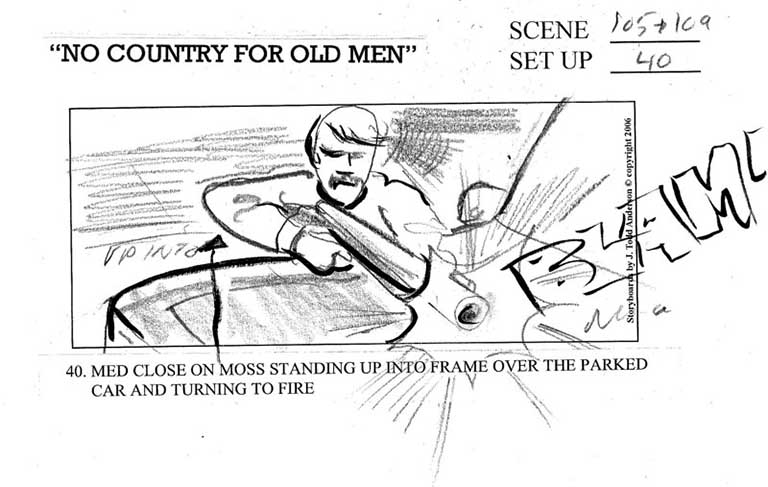
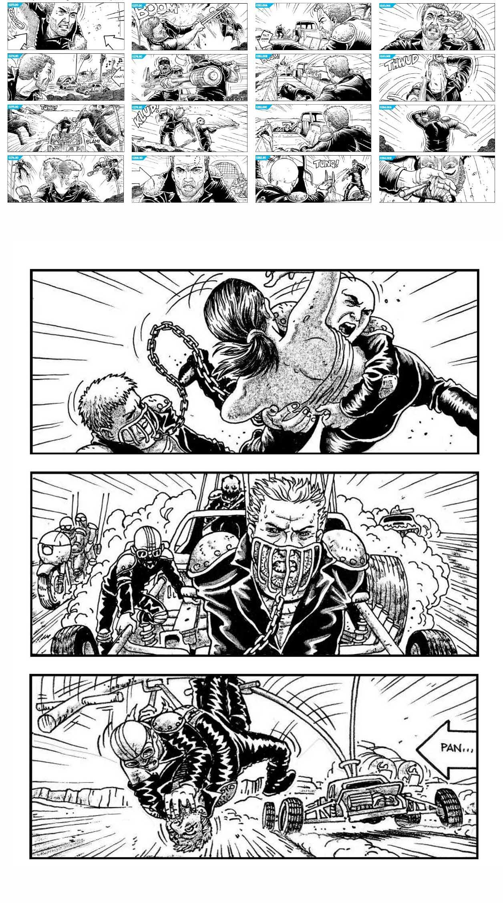

“You can save all the usual problems ahead of shooting by
working with a good artist and a floor plan.”
J Todd Anderson, regular storyboard artist of the Coen Brothers.

Storyboards can be especially useful in visual effects and
action sequences. But they can also be a great tool to
visualize written scenes or to help overcome productional
challenges, as J Todd Anderson, who I talked to for this
article, explains.
The technique of storyboarding was invented in the Walt Disney Studios
sometime in the 1930’s.* It didn’t take long until live action filmmakers also
began to use storyboards. In 1939, Gone with the Wind was one of the first
films to be fully storyboarded. As of the 1940’s storyboarding became an
essential part of the filmmaking process, and it still is today.
“Any improvisations are made in the office, while the film is being put on paper. I mean to improvise on the set, with all those electricians and carpenters around? I personally don’t see how it’s done. Imagine a composer with sheets of blank lines in front of him. And a 100 piece orchestra. And he’s thinking and then he calls up, he says: ‘Flute, give me a note, would you?’ And blob, you get the note and he writes it down. Now that’s what improvisation is on the set. I don’t believe in it.”
The above quote comes from a very entertaining and interesting interview session with Alfred Hitchcock, in which he answers questions about what would be his final film, Family Plot. It should not be a surprise that Hitchcock liked working with storyboards. He claimed to see a film in his mind completely and storyboards were a perfect way for him to show the images he saw in his mind to his cast and crew.
These famous storyboards were drawn by Saul Bass, who is best known for his legendary work as a title and poster designer. During the 1960’s Bass, working as a visual or pictorial consultant, did storyboards for a number of films. There is some controversy surrounding his work on Psycho. After Hitchcock’s death, Saul Bass claimed that he had also (partially) directed this iconic scene, which was disputed by other people involved in the production.
Like Alfred Hitchcock, whose first film job was designing title cards for silent films, Ridley Scott, has a background as a draftsman. After he graduated from art school he founded a production company together with his brother, Tony, through which they primarily produced commercials.
In advertising, storyboards are used extensively. Not just as a productional tool, but also to convince the client of a creative concept. For inexperienced people it can be difficult to read a script. Sketching it out makes it is easier to communicate an idea. Because this can be a way to increase a commercial’s budget, advertising storyboards are often rendered in much more detail than those made for feature films. Ridley Scott brought this way of storyboarding to the production of Alien –and not without success.
After he agreed to do the film, the studio asked him to wait in England for his contract to come through. When he returned to the studio a month later, Scott had drawn out the entire screenplay in storyboard form. Seeing the way he wanted to visualize the script, convinced the studio to double the budget.
On his recent films Ridley Scott likes to work with professional storyboard artists. They usually start out with the director’s own thumbnail sketches, which are now lovingly known as Ridleygrams. In a DVD extra from Hannibal Scott explains that the process of talking through the script and his sketches with a storyboard artist totally prepares him. So that when he hits the set he knows exactly what he wants to shoot.
These storyboards from the iconic final raptor sequence in Jurassic Park, were drawn by Dave Lowry. Lowry is an incredibly experienced artist who has worked on more than 70 feature films. He is a regular collaborator of Steven Spielberg and has worked on all Jurassic Park films, including 2015’s Jurassic World.
Steven Spielberg himself doesn’t have a background as a graphic artist, but he still likes to brief storyboard artists with rough sketches of his shots. (As he explains in this video [https://www.youtube.com/ watch?v=nBH89Y0Xj7c]) Even when a director is not a skilled draftsman, it is not uncommon for him or her to do sketches that are then turned into storyboards by a sketch artist. It is often very helpful for both the director and the storyboard artist, because it forces the director to think about the best way to visually tell the story. Like Ridley Scott saying that his talks with the storyboard artist are almost a preparation for the actual shoot, these rough thumbnails are a first step towards the final image.
Spielberg used to work with a number of storyboard artists. There were 6 different artists doing storyboards for Jurassic Park. He even liked to have one or two sketch artists available on set, to quickly sketch out ideas that might come up last minute. But is seems that Spielberg is using less storyboards these days. Films like Amistad, Lincoln, Bridge of Spies and even Saving Private Ryan were not storyboarded at all, except for the occasional sequence.
Is this a good thing? Well, Raiders of the Lost Ark was fully storyboarded from beginning to end, Indiana Jones and the Kingdom of the Chrystal Skull was not…
Mad Max Fury Road, storyboards by Mark Sexton (2015)

The fourth installment in the Mad Max franchise was a long time in the making. Director George Miller had been working on it going back all the way to 1998. Mark Sexton, who drew these awesome storyboards, worked on the film as a Lead Storyboard Artist between 2000 and 2002. Due to a combination of productional difficulties it would take another 13 years until the film would be released.
Every image in the film was carefully thought out in storyboard form. (The final storyboard existed out of more than 3500 panels) The film notoriously started without a written script and was actually ‘written’ in storyboards, Miller felt that the film had to be put together visually because it is easier to design action that way. This visual way of scripting helped to make Mad Max an iconic piece of visual storytelling.
Many of today’s big action scenes will be shot from several angles using multiple cameras, only to be put together in editing. In Fury Road they used a more classical approach, making sure that there was a strong visual narrative and that the audience could always follow the story without being confused. In a story that features multiple characters chasing each other through a desert in more than 80 vehicles, this is no small feat. By designing all the shots in storyboard form Fury Road turned what could easily have been a chaotic mess into a streamlined action classic that would go on to win 6 Academy Awards and currently holds a 97% score on rotten Tomatoes.
Special thanks to the wonderful Submarine Channel intern Asya Sagiroglu who helped me with the research for this article.